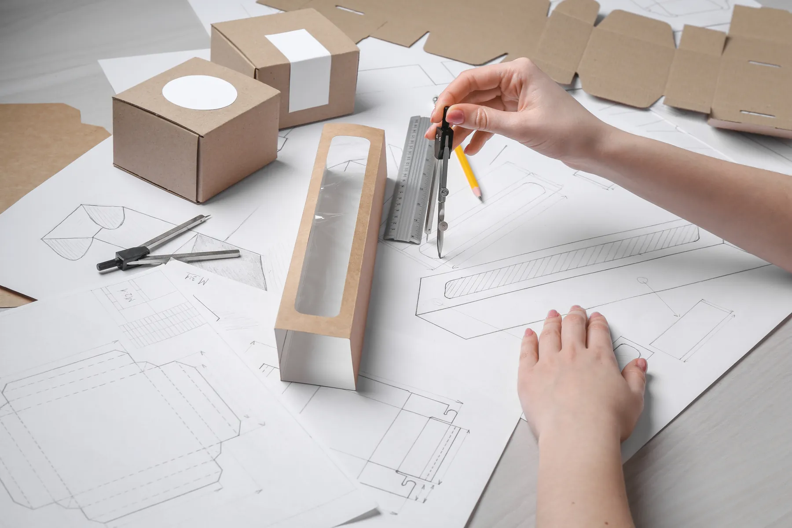

คำถามที่เราได้ยินบ่อยขึ้นเรื่อย ๆ ในช่วงหลังคือ “อยากได้กล่องแบรนด์ตัวเองครับ แต่สั่งแค่ 200 ใบได้ไหม” ลูกค้าที่ถามส่วนใหญ่ไม่ใช่โรงงาน แต่เป็นเจ้าของร้านที่ขายอยู่บน Shopee, Lazada หรือ TikTok Shop ที่เริ่มรู้แล้วว่าตอนลูกค้าแกะกล่อง คือช่วงเวลาเดียวที่แบรนด์ได้อยู่กับลูกค้าแบบตัวต่อตัวจริง ๆ ไม่มีปุ่มเลื่อนผ่าน
เมื่อก่อนคำตอบของคำถามนี้มักจะเป็น “ไม่ได้ครับ ต้องสั่งเป็นพัน” แต่วันนี้คำตอบเปลี่ยนไปแล้ว และเหตุผลไม่ได้อยู่ที่โรงพิมพ์ใจดีขึ้น แต่อยู่ที่โครงสร้างต้นทุนของงานพิมพ์เปลี่ยนไปจริง ๆ บทความนี้จะอธิบายว่าเปลี่ยนตรงไหน และเจ้าของร้านควรตัดสินใจอย่างไรก่อนสั่งกล่องล็อตแรก
1. ทำไม MOQ ถึงต่ำลงได้ — เรื่องของต้นทุนคงที่
ปริมาณสั่งซื้อขั้นต่ำ (MOQ — Minimum Order Quantity) ไม่ได้เป็นตัวเลขที่โรงพิมพ์ตั้งขึ้นมาลอย ๆ แต่มาจากต้นทุนคงที่ (fixed cost) ของแต่ละระบบพิมพ์
งานพิมพ์ออฟเซ็ต (offset) ต้องทำเพลทแม่พิมพ์ตามจำนวนสี ต้องปรับเครื่องและปรับสีก่อนเดินงานจริง (make-ready) ซึ่งกินทั้งเวลาและกระดาษ ต้นทุนก้อนนี้จ่ายเท่ากันไม่ว่าจะพิมพ์ 200 ใบหรือ 5,000 ใบ พอเอาไปหารด้วยจำนวนน้อย ๆ ราคาต่อกล่องจึงพุ่งจนไม่มีใครสั่ง
ส่วนการพิมพ์ดิจิทัล (digital printing) ไม่ต้องทำเพลท ส่งไฟล์แล้วพิมพ์ได้เลย ต้นทุนคงที่จึงต่ำมาก ทำให้งานจำนวนน้อยมีราคาที่จับต้องได้ครั้งแรกในรอบหลายสิบปีของวงการ นี่คือสาเหตุจริง ๆ ที่ร้านเล็ก ๆ เพิ่งจะมีกล่องแบรนด์ตัวเองได้
แต่ต้องเข้าใจอีกด้านด้วย: ต้นทุนต่อใบของงานดิจิทัลแทบไม่ลดตามจำนวน พิมพ์ 300 ใบกับ 3,000 ใบ ราคาต่อใบใกล้เคียงกัน ในขณะที่ออฟเซ็ตยิ่งพิมพ์เยอะ ราคาต่อใบยิ่งถูกลงเรื่อย ๆ ทั้งสองระบบจึงไม่ได้แข่งกัน แต่เหมาะกันคนละช่วงของธุรกิจ
2. จุดคุ้มทุนอยู่ตรงไหน — วิธีหาคำตอบด้วยตัวเอง
สูตรที่ใช้ได้กับงานพิมพ์ทุกชนิดคือ
ราคาต่อใบ = (ต้นทุนคงที่ ÷ จำนวนที่พิมพ์) + ต้นทุนต่อใบ
ดิจิทัลชนะเพราะวงเล็บหน้าเล็กมาก ออฟเซ็ตชนะเพราะตัวหลังถูกกว่า จุดตัด (break-even) คือจำนวนที่ทำให้ราคาต่อใบของทั้งสองระบบเท่ากันพอดี — และจุดนี้ไม่มีตัวเลขมาตรฐานตายตัว เพราะขึ้นกับขนาดกล่อง จำนวนสี ชนิดกระดาษ และงานหลังพิมพ์ของแต่ละงาน
วิธีที่เร็วที่สุดสำหรับเจ้าของร้านคือ ขอใบเสนอราคา 2–3 จำนวนพร้อมกัน เช่น 300 / 1,000 / 3,000 ใบ แล้วหารเป็นราคาต่อใบเทียบกันเอง ตัวเลขจะบอกเองว่าจุดคุ้มทุนของงานคุณอยู่ตรงไหน และคุ้มไหมที่จะสั่งเพิ่มอีกนิดเพื่อลดราคาต่อหน่วย (เรื่องนี้เราเขียนละเอียดไว้แล้วใน Cost 101: ทำไมพิมพ์เยอะยิ่งคุ้ม)
สิ่งที่คนสั่งกล่องครั้งแรกมักลืมคือ แม่พิมพ์ไดคัท ถ้ากล่องเป็นทรงเฉพาะ ต้องทำแม่พิมพ์ใบมีดสำหรับตัดขึ้นรูป ซึ่งเป็นต้นทุนคงที่อีกก้อนที่แยกจากค่าพิมพ์ ข่าวดีคือแม่พิมพ์ตัวนี้เก็บไว้ใช้ซ้ำได้ การสั่งครั้งต่อไปด้วยทรงเดิมจึงถูกลง — ตอนขอราคาให้ถามให้ชัดว่า “ราคานี้รวมค่าแม่พิมพ์ไดคัทแล้วหรือยัง และสั่งซ้ำต้องจ่ายอีกไหม”
3. เลือกกระดาษให้ตรงกับหน้าที่ของกล่อง
กล่องของร้านออนไลน์มักมีสองชั้น และสองชั้นนี้ใช้วัสดุคนละแบบ
กล่องชั้นนอกที่ใช้ส่งพัสดุ — งานหลักคือปกป้องสินค้าและทนการขนส่ง ใช้กระดาษลูกฟูก (corrugated) โดยลอน E บางเรียบเหมาะกับงานที่ต้องการผิวพิมพ์สวย ส่วนลอน B หนากว่าและรับแรงกระแทกได้ดีกว่า
กล่องสินค้าชั้นใน — งานหลักคือความสวยและการเล่าแบรนด์ นิยมใช้กระดาษอาร์ตการ์ดประมาณ 250–350 แกรม พิมพ์สี่สีแล้วเคลือบด้านหรือเคลือบเงาตามคาแรกเตอร์แบรนด์
กระดาษคราฟท์ กำลังได้รับความนิยมเพราะดูเป็นธรรมชาติและสื่อเรื่องความยั่งยืนได้ทันที แต่ต้องเข้าใจข้อจำกัด: เนื้อกระดาษเป็นสีน้ำตาลและดูดหมึก สีที่พิมพ์ลงไปจะจมและหม่นกว่าที่เห็นบนจอเสมอ งานที่ใช้คราฟท์จึงควรออกแบบด้วยสีน้อยสีและคอนทราสต์สูง แล้วดูตัวอย่างจริงก่อนเดินงานทุกครั้ง
ถ้าอยากให้กล่องรีไซเคิลได้ง่ายขึ้น หลักคิดง่าย ๆ คือลดสิ่งที่ไม่ใช่กระดาษ เช่น เลี่ยงการเคลือบฟิล์มทั้งใบเมื่อไม่จำเป็น หรือใช้ปั๊มนูนแทนฟอยล์ในบางจุด รายละเอียดเรื่องชนิดกระดาษกล่องอ่านเพิ่มได้ที่ กระดาษที่นิยมนำมาผลิตกล่องมีกี่ชนิด
4. เรื่องสี — ประเด็นที่เถียงกันบ่อยที่สุดตอนรับงาน
ข้อควรรู้ที่สำคัญที่สุดของการเริ่มจากงานดิจิทัลคือ สีของงานพิมพ์ดิจิทัลกับออฟเซ็ตไม่เท่ากันร้อยเปอร์เซ็นต์ โดยเฉพาะแบรนด์ที่ล็อกสีด้วยระบบ Pantone งานดิจิทัลจำลองสีพิเศษเหล่านั้นด้วยหมึกสี่สี ซึ่งบางเฉดทำได้ใกล้เคียงมาก แต่บางเฉด — โดยเฉพาะส้มสด เขียวสด และน้ำเงินเข้ม — จะเพี้ยนอย่างเห็นได้ชัด
สิ่งที่ควรทำก่อนอนุมัติงาน:
• ตกลงให้ชัดว่าจะดูปรู๊ฟแบบไหน ปรู๊ฟดิจิทัลบนกระดาษจริง หรือดูจากไฟล์บนจอ (ซึ่งไม่ควรใช้ตัดสินสี)
• เก็บปรู๊ฟที่เซ็นอนุมัติแล้วไว้เป็นตัวอ้างอิงของการสั่งครั้งต่อ ๆ ไป
• ถ้าวางแผนว่าโตขึ้นแล้วจะย้ายจากดิจิทัลไปออฟเซ็ต ให้บอกโรงพิมพ์ตั้งแต่ต้น เพื่อเลือกโทนสีที่ทำได้ดีทั้งสองระบบ จะได้ไม่ต้องมาแก้อัตลักษณ์แบรนด์กลางทาง
เรื่องการเตรียมไฟล์ให้สีไม่เพี้ยน อ่านต่อได้ที่ ส่งไฟล์ยังไงไม่ให้เพี้ยน — 5 ความผิดพลาดที่ทำให้งานพิมพ์ออกมาไม่ตรงปก
5. อยากได้ Unboxing แต่งบยังไม่ถึงกล่อง — เริ่มจากของชิ้นเล็กก่อน
ถ้าตัวเลขที่ได้มายังสูงเกินกำลังในรอบนี้ ยังมีทางที่ได้ผลใกล้เคียงในงบที่ต่ำกว่ามาก เพราะของชิ้นเล็กเหล่านี้พิมพ์จำนวนน้อยได้ง่ายกว่ากล่องมาก และเปลี่ยนดีไซน์ตามแคมเปญได้เร็ว
• สติกเกอร์ปิดผนึกกล่อง — ใช้กล่องพัสดุน้ำตาลธรรมดา แล้วปิดด้วยสติกเกอร์โลโก้ ลูกค้าก็จำแบรนด์ได้แล้ว
• การ์ดขอบคุณ — ใส่ข้อความสั้น ๆ พร้อม QR Code ชวนรีวิวหรือเข้าไลน์ร้าน วัดผลได้จริง
• กระดาษห่อและกระดาษรองในกล่อง — เปลี่ยนภาพตอนเปิดกล่องได้ทั้งใบด้วยต้นทุนไม่กี่บาท
• เทปกาวพิมพ์แบรนด์ — เห็นตั้งแต่พัสดุยังอยู่ในมือคนส่ง
วิธีที่เราแนะนำลูกค้าเสมอคือ เริ่มจากของเล็กก่อนในช่วงที่ยอดยังไม่นิ่ง แล้วค่อยลงทุนกล่องพิมพ์เต็มใบตอนที่รู้แน่ว่าสินค้าตัวไหนขายได้สม่ำเสมอ ไอเดียสำหรับส่วนนี้ดูเพิ่มได้ที่ ไอเดีย Packaging ที่ทำให้ลูกค้ารักแบรนด์คุณ
6. เช็กลิสต์ก่อนสั่งกล่องล็อตแรก
1) วัดขนาดสินค้าจริงก่อนคุยเรื่องดีไซน์ — รวมวัสดุกันกระแทกด้วย กล่องที่สวยแต่ใส่ของไม่พอดีคือกล่องที่ใช้ไม่ได้
2) ขอกล่องเปล่าตัวอย่าง (dummy) มาลองใส่สินค้าจริง — ก่อนอนุมัติพิมพ์ทั้งล็อต ขั้นตอนนี้กันความเสียหายได้มากที่สุด
3) ขอราคาหลายจำนวนพร้อมกัน — แล้วเทียบเป็นราคาต่อใบ อย่าเทียบจากยอดรวม
4) ถามให้ชัดเรื่องแม่พิมพ์ไดคัท — รวมในราคาหรือยัง เก็บไว้ใช้ซ้ำได้ไหม
5) เตรียมไฟล์ให้พร้อมพิมพ์ — เผื่อระยะตัดตก (bleed) 3 มิลลิเมตร ภาพความละเอียด 300 dpi ที่ขนาดใช้งานจริง และ embed หรือ create outline ฟอนต์ก่อนส่ง
6) เช็กขนาดกล่องกับตารางค่าส่งของขนส่งที่ใช้ — กล่องที่ใหญ่เกินจำเป็นเพียงไม่กี่เซนติเมตรอาจข้ามไปอีกช่วงราคา และกินกำไรต่อออเดอร์ไปทุกกล่องตลอดทั้งปี
สรุป
สิ่งที่เปลี่ยนไปจริง ๆ ไม่ใช่ว่ากล่องสวยถูกลง แต่คือ “ต้นทุนของการเริ่มต้น” ที่ต่ำลงจนร้านเล็กเข้าถึงได้ เจ้าของร้านออนไลน์วันนี้จึงทดลองดีไซน์ ทดลองขนาด และทดลองแคมเปญได้ในจำนวนน้อย แล้วค่อยขยับไปพิมพ์จำนวนมากเมื่อมั่นใจ — ซึ่งเป็นลำดับที่ปลอดภัยกว่าการทุ่มสั่งทีเดียวเป็นพันแล้วมาพบทีหลังว่าขนาดไม่พอดี หรือดีไซน์ยังไม่ใช่
ถ้ากำลังจะสั่งกล่องล็อตแรก ส่งขนาดสินค้าและจำนวนที่คิดไว้มาคุยกับทีมธนะพัฒน์ฯ ได้เลยครับ เราช่วยดูให้ตั้งแต่เลือกกระดาษ เทียบราคาหลายจำนวน ไปจนถึงตรวจไฟล์ก่อนขึ้นแท่นพิมพ์
บทความเกี่ยวกับสิ่งพิมพ์อื่นๆ
- ความแตกต่างระหว่างโรงพิมพ์ OFFSET และ โรงพิมพ์ DIGITAL
- กระดาษที่นิยมนำมาทำถุงมีกี่ชนิด
- กระดาษที่นิยมนำมาผลิตกล่องมีกี่ชนิด
- การพิมพ์ดิจิทัล (Digital Printing) คืออะไร?
- การพิมพ์ที่ยั่งยืน (Sustainable Printing) คืออะไร?
- พลังของบรรจุภัณฑ์ทางการตลาด
- เทคนิคการตัดไดคัทและปั๊มนูน
- แจกฟรี! 🎁 ไอเดีย Packaging น่ารัก ที่ทำให้ลูกค้ารักแบรนด์คุณ
- วิธีเลือกกระดาษให้เหมาะกับงานพิมพ์ของคุณ
- Cost 101: ทำไมพิมพ์เยอะยิ่งคุ้ม (เศรษฐศาสตร์งานพิมพ์)
- ส่งไฟล์ยังไงไม่ให้เพี้ยน — 5 ความผิดพลาดที่ทำให้งานพิมพ์ออกมาไม่ตรงปก (และวิธีป้องกัน)